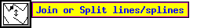

その他
Edit メニュー の
Search/Replace...、
あるいはキーボード・アクセラレータ Meta-I によって、
Search & Replace パネルを開くことができます。
Search & Replace パネルでは、
テキスト
の検索や置換、スペル・チェックを行なうことができます。
また、検索したテキストに対して
UPDATE を行なうことも可能です。
- Search for
- 検索すべき文字列を入力します。
このウィンドウで return をタイプするか、
Search ボタンをクリックすると、検索が行なわれます。
- Search
- このボタンをクリックすると、
Search for で指定された文字列の検索が行なわれます。
検索を行なうと、その文字列を含むテキストが
その座標とともに下のウィンドウに表示されます。
- Case Sensitive
- このボックスにチェックが入っている場合には、
検索に際して大文字と小文字を区別します。
- Replace with
- このフィールドには、
Search for フィールドで指定した文字列を置換すべき文字列を入力します。
- Replace
- 検索を行なった後にこのボタンをクリックすると、
Search for フィールドで指定された文字列が
Replace with フィールドで指定された文字列に置換されます。
これをクリックする前に一度検索を行なうことが必要となっています。
- UPDATE Settings
- 検索を行なった後にこのボタンをクリックすると、
一致したテキストに対して UPDATE を実行し、
属性パネル での設定を
それらのテキストに適用します。
注意：
この機能に対しては Undo を
使用することはできません。
Edit メニュー の
Spell Check...、
あるいはキーボード・アクセラレータ Meta-K によって、
Spell Check パネルを開くことができます。
xfig は、図に含まれるテキストに対して
外部のスペル・チェッカ (Fig.spellcheckcommand リソースで指定される)
を実行し、その結果を表示します。
![[Spell Check Panel]](../images/spell-check-panel.png)
- Status window
- スペル・チェッカの状態や、
いくつのミススペルが見付かったかを表示します。
- Misspelled words
- ミススペルと判断された単語が表示されます。
いずれかの単語をクリックすると
それが Correction フィールドにコピーされ、
そこで訂正を行なうことが可能となります。
このフィールドで return をタイプするか、
あるいは Correct ボタンをクリックすると、
全てのテキスト・オブジェクトに含まれるその単語全てが置換されます。
- Recheck
- このボタンをクリックするとスペルの再チェックが行なわれます。
これは単語の訂正を行なった後にそれを確認するために有用です。
注意：
この機能に対しては Undo を
使用することはできません。
3ボタン・マウスの使用が推奨されますが、
2ボタン・マウスを使うことも可能です。
もし2ボタン・マウスを使っており、
X サーバーが3ボタン・マウスのエミュレートを行なっていないならば、
META (あるいは ALT) キーとマウスボタン3 (右ボタン) を同時に押すことで、
マウスボタン2をシミュレートできます。
通常、マウスボタン1〜3は、それぞれ左、中、及び右ボタンに割り当てられます。
xfig が Imakefile の
`#define WHEELMOUSE' を有効としてコンパイルされており、
かつホイール・マウスを使っているならば、
以下の機能が使用可能となります:
- 属性ボタン
- 属性ボタンの上でホイールを回転させると、
マウス・ボタン2や3がクリックされた場合と同様、
そのボタンの設定がインクリメント／デクリメントされます。
これは、線の太さなどのパラメータを変更する際に有用でしょう。
- スピナー
- スピナーの上でホイールを回転させると、
その値が増加／減少します。
- ルーラー (ものさし)
- ルーラーの上でホイールを回転させると、
キャンバスがスクロールします。
- ズーム
- キャンバス上で CONTROL キーを押した状態でホイールを回転させると、
ポインタの周囲でキャンバスが拡大／縮小します。
- モード変更
- キャンバス上でホイールを回転させると、
描画モード (上向き)、 あるいは編集モード (下向き) を選択するための
パネルが開かれます。
このパネルは、いずれかの項目が選択されるか、
あるいはホイールが逆に回された時に閉じられます。
![[Mouse Function Indicator]](../images/mouse-function-indicator.png)
マウス機能インジケータには、
それぞれのマウスボタンにどのような機能が割り当てられているかが表示されます。
マウス・ボタンの機能は、その時の状態
(どのモードが選択されているか、マウス・カーソルがどこにあるか、
Shift キーや Control キーが押されているかどうか、など)
によって変わりますが、
マウス機能インジケータを見ればその状態での機能を知ることができます。
TEXT モードにおいて
キーボードからのテキストの入力を行なう状態となっているときには、
マウス機能インジケータにはその旨も表示されます。
左右のマウスボタンを入れ換えている場合には、
-flipvisualhints オプション、
あるいは Fig.flipvisualhints リソースを用いて、
マウス機能インジケータに表示されるメッセージを
それに合わせることができます。
バルーン・メッセージも参照して下さい。
この機能が有効となっている場合
(Global Settings パネル を参照)
には、カーソルの下にあるボタンなどに対応する
「バルーン」メッセージが表示されます。
バルーン・メッセージは、
カーソルがその上に動かされてから、あらかじめ指定した時間
(Fig.balloon_delay リソースによって ms 単位で指定することができる)
が過ぎた後に行なわれます。
この例を次に示します。

xfig、及び transfig/fig2dev は 2000年対応となっています。
それらのプログラムの動作は、日付に依存していません。
[ Contents |
Introduction |
Credits ]